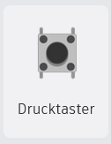
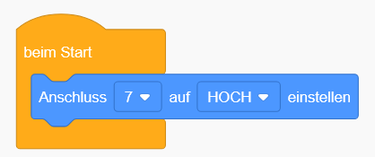

Knöpfe in der Ampelschaltung
In diesem Abschnitt erweitern wir unsere Ampelschaltung um einen Knopf, der für Fußgänger genutzt wird. Zuerst lernen wir, wie man einen Knopf richtig anschließt und später im Code abfragt, ob er gedrückt wurde.
Öffne Tinkercad in einem neuen Fenster und erstelle ein neues Projekt, um den Knopf auszuprobieren.
Ziehe einen Drucktaster (Knopf) aus der Komponentenliste und platziere ihn mittig auf das Steckbrett (über die mittlere Lücke hinweg).
Verbinde den GND-Pin des Arduinos mit der blauen Minus-Schiene auf dem Steckbrett.
Verbinde nun die Minus-Schiene mit dem linken Bein des Knopfes.
Schließe ein weiteres Kabel an das rechte Bein des Knopfes an und verbinde es mit Pin 7 am Arduino.
So sollte es nun aussehen:
Um später im Code abzufragen, ob der Knopf gedrückt wurde, müssen wir im Setup den verwendeten Pin auf "INPUT" setzen. Dies stellt sicher, dass der Arduino den Zustand des Pins lesen kann.

Nun kannst du mit dem Block „Digitalen Anschluss lesen“ prüfen, ob der Knopf Strom bekommt.
Mit dem grünen Vergleichsblock „=“ kannst du dann überprüfen, ob der Wert des Pins „niedrig“ ist. Dies ist der Moment, in dem der Knopf gedrückt wird.
Momentan haben wir noch keine Aktion, die der Knopf auslösen kann. Füge deshalb eine LED an einem Pin deiner Wahl hinzu.
Nun kannst du im „Für immer“-Block einen „Wenn, dann, sonst“-Block einfügen.
Damit kannst du eine Aktion ausführen, wenn der Knopf gedrückt wird (der Pin auf „niedrig“ ist). Ein Beispiel: Die LED leuchtet, wenn der Knopf gedrückt wird, und geht aus, wenn er losgelassen wird.
Baue den Code so, dass die Lampe leuchtet, wenn der Knopf gedrückt wird – und ausgeht, wenn er losgelassen wird.
Teste danach deinen Code und überprüfe, ob alles funktioniert. Wenn es nicht klappt, frage nach Hilfe.